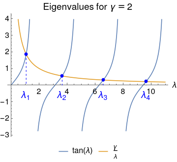

Your work doesn't need to be as detailed as this.
Source code for the images: code.wl
Consider a uniform slab of thickness 2L, thermal conductivity k, specific heat capacity c, and density \rho .
Suppose the slab is initially at temperature \TI throughout, and thereafter loses heat to the environment at (lower) temperature \TE via Newtonian cooling through its two faces, with a heat transfer coefficient of h.
What happens?
Take the slab to be the region -L \le x \le L. By symmetry, the temperature profile will be an even function of x, so we need only consider the right half 0 \le x \le L by using a zero-slope (or insulating) boundary condition at x = 0.
We have the following:
| Independent variables | |
|---|---|
| x | position (0 \le x \le L) |
| t | time (t \ge 0) |
| Dependent variable | |
| T | temperature |
| Constants | |
| L | semi-thickness |
| k | thermal conductivity |
| c | specific heat capacity |
| \rho | density |
| \TI | initial temperature |
| \TE | environment temperature |
| h | heat transfer coefficient |
Heat equation in T = T (x, t), throughout the slab, for all time:
Symmetry along the central plane x = 0:
Newtonian cooling along the right-hand face x = L (flux through the surface is proportional to the difference between the surface temperature and the environment temperature):
Both sides of the equation have dimensions of power per area. The heat transfer coefficient h has dimensions of power per area per temperature.
Temperature is \TI throughout the slab, initially:
As in the rod problem we are given two temperatures, in this case the initial temperature \TI and the environment temperature \TE. We put
so that the scaled initial temperature is \scaled{T} = 1 and the scaled environment temperature is \scaled{T} = 0.
As in the rod problem the time scale isn't immediately obvious, so we put
with the time scale \tau yet to be determined, i.e. free.
After moving from unscaled to scaled variables, the PDE, boundary conditions, and initial condition become the following:
Since there are two dimensionless groups but only one free scale \tau, only one of the groups can be eliminated. In particular, \tau only appears in the PDE group, so only it can be eliminated:
(Quick mental check: Thicker slab implies longer time scale? Better conductor implies shorter time scale? Yes to both.)
The second dimensionless group \group{h L / k} (called the Biot number) cannot be eliminated because h, L, and k are all given, and NOT free. To save writing, let us call it \gamma for short:
Finally we drop the primes:
Unlike the rod example, here the PDE and the two boundary conditions are already homogeneous. There is no need to subtract out the equilibrium solution because the equilibrium solution is identically zero (corresponding to the slab completely cooling to the environment temperature). So we may proceed directly to separation of variables:
After putting
and following the usual procedure, we obtain the form
Along the plane of symmetry x = 0 we have symmetry (zero slope),
which implies B = 0. Therefore
Along the right face we have the Newtonian cooling condition. The left hand side is
and the right hand side is
Therefore \con{\lambda} \sin\con{\lambda} = \gamma \cos\con{\lambda}, or
The equation for \con{\lambda} is transcendental, so the roots can only be determined numerically.

From Sturm–Liouville theory we already know that the roots will be \lam{1} < \lam{2} < \dots to infinity, and by looking at the equation (or a plot of \tan\con{\lambda} and \gamma / \con{\lambda}) we see that each \lam{n} lies between the \con{n}th root and the \con{n}th pole of tan, i.e.
In Mathematica you will want to use FindRoot,
and the bound above suggests (\con{n} - 3/4) \pi as a reasonable
initial guess for \lam{n}
(although for large \con{n} the lower bound would be better).
E.g. for \gamma = 2,
Module[{gamma, nMax, initialGuess, root},
gamma = 2;
nMax = 5;
Table[
initialGuess = (n - 3/4) Pi;
root = FindRoot[Tan[#] - gamma / # &, {initialGuess}];
{n, root}
, {n, nMax}
] // TableForm
]
gives the following:
| \con{n} | \lam{n} |
|---|---|
| 1 | 1.07687 |
| 2 | 3.6436 |
| 3 | 6.57833 |
| 4 | 9.62956 |
| 5 | 12.7223 |
Since FindRoot is more or less a black box,
there is no guarantee that each root found
corresponds to the specified \con{n}.
If the initial guess is poor, it could have jumped to a root
corresponding to a different value of \con{n}.
Therefore, always check the result of numerical root finding with a plot
to see if it makes sense.
Thus given any \gamma we can find the \lam{n} numerically. By linearity, we have
The coefficients are determined from the initial condition,
Therefore
and we are done.